(1) Die Beurteilung von Vibrationen erfolgt über das sogenannte Energieäquivalenzprinzip. Das bedeutet, dass zwei verschiedene Vibrationsexpositionen die gleiche Wirkung haben, wenn die Produkte aus den Quadraten der Beschleunigungen und der jeweiligen Einwirkungsdauer gleich sind. Auf diese Weise lassen sich alle Vibrationsexpositionen auf eine tägliche Arbeitsschicht von acht Stunden normieren. Es gilt die Beziehung
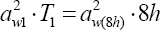
wobei aw1 die Beschleunigung und T1 die Einwirkungsdauer der zu normierenden Vibrationsbelastung sind. Der Ausdruck aw(8h) ist die auf acht Stunden bezogene Beschleunigung, die die gleiche Wirkung entfaltet wie die Beschleunigung aw1 in der Einwirkungsdauer T1.
(2) Um den Tages-Vibrationsexpositionswert A(8) zu einer Vibrationsexposition mit einem Beschleunigungswert awe und einer Einwirkungsdauer von Te zu bestimmen, ist die obige Formel umzustellen und der Korrekturfaktor k für jede Einwirkungsrichtung x, y, und z einzufügen:
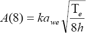
(3) Der Korrekturfaktor k hat den Wert 1 für die z-Richtung und 1,4 für die x- und die y-Richtung. Damit wird die unterschiedliche Empfindlichkeit des Menschen auf vertikale und horizontale Vibrationen berücksichtigt.
(4) Oft haben Beschäftigte an einem Arbeitstag nicht nur eine Aufgabe mit Vibrationsbelastung auszuführen. Der Tages-Vibrationsexpositionswert A(8) wird dann über die folgende Formel bestimmt, wenn der Beschäftigte an einem Tag mehrere Tätigkeiten mit Vibrationsbelastung ausübt:
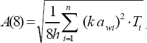
(5) Der Tages-Vibrationsexpositionswert A(8) ist die Summe aus den Teil-Vibrationsexpositionen für die verschiedenen Vibrationsquellen i mit den Beschleunigungswerten awi und den Teilexpositionsdauern Ti. Diese Summe ist für jede Einwirkungsrichtung separat zu bilden. Derjenige Wert von Ax(8), Ay(8) und Az(8), aus dem die geringste zulässige Expositionszeit folgt, ist die Gesamt-Tagesexposition gegenüber Vibrationen, der Tages-Vibrationsexpositionswert A(8).
(6) Eine andere, mathematisch korrekte Definition ist die folgende:
Wenn sowohl in z-Richtung als auch in mindestens einer der Richtungen x und y der Auslösewert überschritten wird, so ist A(8) derjenige Richtungswert (Ax(8) oder Ay(8) oder Az(8)) bei dem der Quotient aus diesem Wert und dem richtungsabhängigen Expositionsgrenzwert (Ax(8)/1,15 m/s2, Ay(8)/1,15 m/s2 oder Az(8)/0,80 m/s2) maximal ist. In allen anderen Fällen ist A(8) der größte der Richtungswerte.
(7) Wenn sowohl in z-Richtung als auch in mindestens einer der Richtungen x und y der Auslösewert überschritten wird, ist auch derjenige Wert von Ax(8), Ay(8) und Az(8), für den sich der größte Prozentsatz der Ausschöpfung des jeweiligen Grenzwerts (Ausschöpfungsgrad) ergibt, der Tages-Vibrationsexpositionswert A(8):
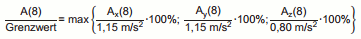
Diese Berechnung von A(8) ist praxisnah umgesetzt, wenn z. B. der Ganzkörper-Vibrations-Belastungsrechner (http://bb.osha.de/docs/gkv_calculator.xls)verwendet wird.
| Schritt 1: | Ermitteln Sie die drei Effektivwerte der frequenzbewerteten Beschleunigung awx, awy und awz aus Herstellerangaben, sonstigen Quellen bzw. Messungen. |
| Schritt 2: | Bestimmen Sie die Tagesexposition in den drei Richtungen x, y und z aus: 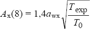 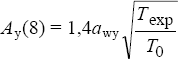 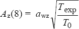 Hierin ist
|
| Schritt 3: | Derjenige Wert von Ax(8), Ay(8) und Az(8), aus dem die geringste zulässige Expositionszeit folgt, ist der Tages-Expositionswert. |
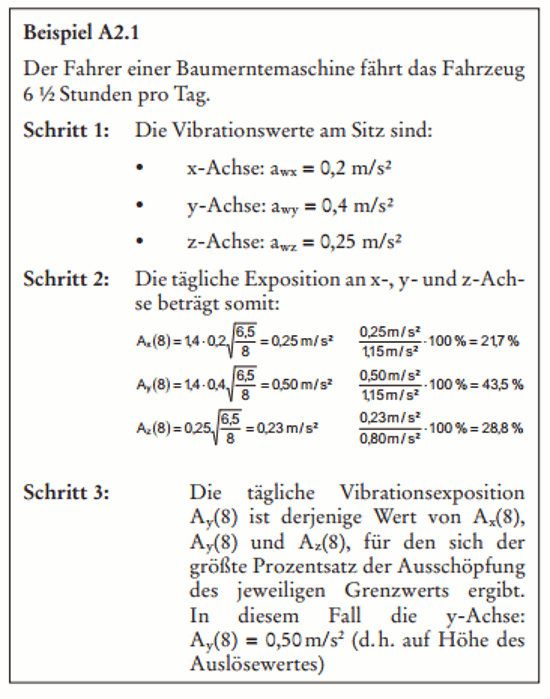
Ist eine Person mehr als einer Vibrationsquelle ausgesetzt (vielleicht, weil sie zwei oder mehr unterschiedliche Maschinen nutzt bzw. Tätigkeiten am Tag ausübt), wird eine Teil-Vibrationsexposition aus der Größe und der Dauer für jede Achse und für jede Exposition errechnet. Die Teil-Vibrationswerte werden zusammengefasst und ergeben den täglichen Gesamtwert der Exposition A(8) für die betreffende Person und für jede Achse. Die Tages-Vibrationsexposition entspricht dann dem höchsten Wert der drei Einzel-Achsenwerte bzw. demjenigen Wert, der zur geringsten zulässigen Expositionszeit führt.
| Schritt 1: | Bestimmen Sie für jede Aufgabe bzw. für jedes Fahrzeug die drei Effektivwerte der frequenzbewerteten Beschleunigung awx, awy und awz aus den Herstellerangaben, sonstigen Quellen bzw. Messungen. |
| Schritt 2: | Ermitteln Sie die tägliche Teilexposition in den drei Richtungen x, y und z aus: 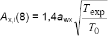 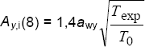 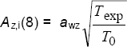 Hierin ist
Jede Teil-Vibrationsexposition steht für den Anteil, den eine bestimmte Vibrationsquelle (Maschine oder Tätigkeit) an der täglichen Gesamtexposition des Arbeitnehmers hat. Die Kenntnis der Teilexpositionswerte wird bei der Festlegung der Prioritäten helfen: Schutzmaßnahmen sollten vorrangig die Maschinen, Tätigkeiten bzw. Prozesse betreffen, die die höchsten Werte einer Teil-Vibrationsexposition haben. |
| Schritt 3: | Die tägliche Gesamt-Vibrationsexposition kann aus den Werten für die Teil-Vibrationsexposition für jede Achse (j) errechnet werden, unter Verwendung von: 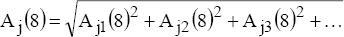 Hierin sind Aj1(8), Aj2(8), Aj3(8) etc. die Werte für die Teil-Vibrationsexposition für die verschiedenen Vibrationsquellen. |
| Schritt 4: | Derjenige Wert von Ax(8), Ay(8) und Az(8), aus dem die geringste zulässige Expositionszeit folgt, ist die Tagesexposition gegenüber Vibrationen. |
|
Beispiel Ein Auslieferungsfahrer verbringt täglich eine Stunde damit, seinen Lieferwagen mit Hilfe eines kleinen Gabelstaplers zu beladen. Im Anschluss daran sitzt er sechs Stunden lang am Steuer seines Lieferwagens.
| ||||||||||||||||
(1) Das Management der Exposition gegenüber Ganzkörper-Vibrationen lässt sich durch die Verwendung eines Systems mit Expositionspunkten vereinfachen. Für jedes betriebene Fahrzeug oder jede betriebene Maschine lässt sich die Anzahl der in einer Stunde gesammelten Expositionspunkte (PE,1h in Punkten pro Stunde) über die Vibrationsintensität aw und den Faktor k (1,4 für die x- und y-Achse bzw. 1,0 für die z-Achse) ermitteln:
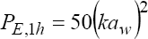
(2) Expositionspunkte werden einfach addiert, so dass man für jede Person die Gesamtzahl von Expositionspunkten an einem Tag bestimmen kann.
(3) Die den Auslöse- und Expositionsgrenzwerten entsprechenden Expositionspunkte sind:
Im Allgemeinen wird die Anzahl der Expositionspunkte PE wie folgt definiert: 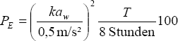 Hierin sind aw die frequenzbewertete Beschleunigung in m/s², T die Expositionszeit in Stunden und k der Multiplikationsfaktor von 1,4 für die x- und y-Achsen bzw. von 1,0 für die z-Achse (siehe auch Tabelle der Expositionspunkte). |
Die Tagesexposition A(8) lässt sich aus den Expositionspunkten berechnen: 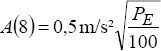 |
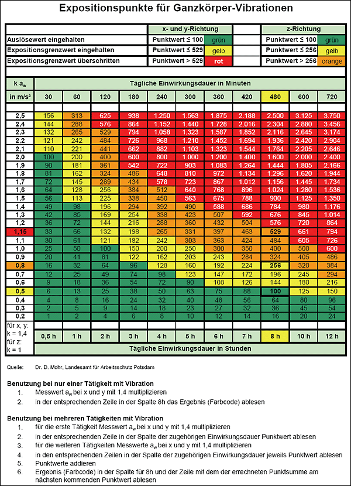
Liegen die Beschleunigungswerte in m/s² vor, ist wie folgt vorzugehen:
| Schritt 1: | Bestimmen Sie für jede Aufgabe bzw. jedes Fahrzeug die Punktwerte unter Verwendung der Tabelle mit den Expositionspunkten auf der Basis des Beschleunigungswertes, des k-Faktors und der Expositionszeit. |
| Schritt 2: | Ergänzen Sie für jede Achse die Punkte je Maschine, um die täglichen Gesamtpunkte je Achse zu erhalten. |
| Schritt 3: | Derjenige Wert der drei Achsen, der zur geringsten zulässigen Expositionszeit führt, ist die Tages-Vibrationsexposition in Punkten. |
|
Beispiel Ein Auslieferungsfahrer verbringt täglich eine Stunde damit, seinen Lieferwagen mithilfe eines kleinen Gabelstaplers zu beladen. Im Anschluss daran sitzt er sechs Stunden lang am Steuer seines Lieferwagens.
|
| Schritt 1: | Ermitteln Sie für jede Aufgabe bzw. jedes Fahrzeug die Werte "Punkte je Stunde", und zwar aus Herstellerangaben, sonstigen Quellen bzw. Messungen. |
| Schritt 2: | Bestimmen Sie für jedes Fahrzeug bzw. jede Aufgabe die täglichen Punkte. Hierfür multiplizieren Sie die Anzahl von Punkten je Stunde mit der Anzahl an Einsatzstunden der Maschine. |
| Schritt 3: | Ergänzen Sie für jede Achse die Punkte je Maschine, um die täglichen Gesamtpunkte je Achse zu erhalten. |
Derjenige Wert der drei Achsen, der zur geringsten zulässigen Expositionszeit führt, ist die Tages-Vibrationsexposition in Punkten.
|
Beispiel Ein Auslieferungsfahrer verbringt täglich eine Stunde damit, seinen Lieferwagen mit Hilfe eines kleinen Gabelstaplers zu beladen. Im Anschluss daran sitzt er sechs Stunden lang am Steuer seines Lieferwagens.
|